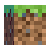

БЛОКИ

Усі блоки у майнкрафті
- Якщо вам хочеться зрубати дерево цілком, але Ви не можете дістати до верху, спробуйте залишити найнижчий
блок дерева недоторканим (як пень), залізти на нього, зрубати дерево і потім добути блок під собою.
- Якщо Ви все ще не можете дістати до верхнього блоку деревини, то встановіть під собою який-небудь
легкоразрушаемий блок (земля або вовна, наприклад) щоб опинитися ще вище, або просто поставте на стовбур
сходи, заберіть на верх, вирубуючи дорогу в листі, і зрубаєте дерево від вершини.
- Для гігантських дерев зі стовбуром товщиною в два блоки можна або спробувати піднятися навершину дерева
по ліанах (якщо це дерево джунглів), або вирубати всередині цього дерева своєріднi сходи, піднятися по
ній вгору і добути вже все дерево цілком.
- При будівництві ферми дерев віддавайте перевагу деревам джунглів або хвойним гігантам: вони дають
найбільше деревини. Наступними йдуть темні дуби, потім берези і акації: вони не виростають вище семи
блоків у висоту, і способом, описаним вище, можуть бути зібрані цілком.
- Іноді незручно добувати їли (сосни) і дуби: їли часто виростають занадто високо, а дуби іноді виходять
розлогими (зрубати їх найважче).
- Щоб спростити процес, поставте твердий блок над саджанцем на висоті 5-7 від землі, тоді дерево виросте
невеликою.